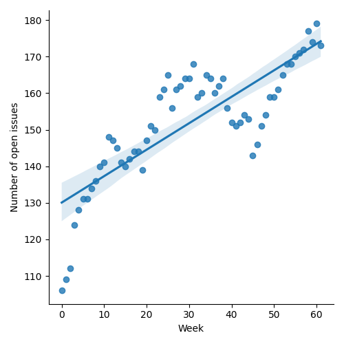
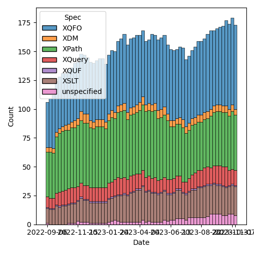
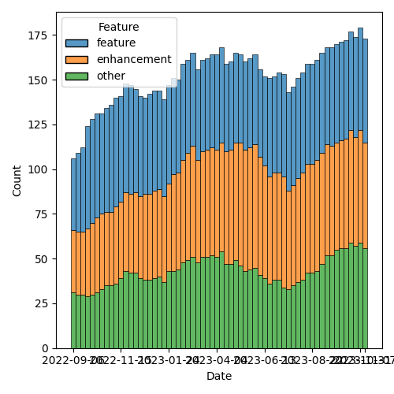

QT4 CG Meeting 054 Minutes 2023-11-14
Table of Contents
- Draft Minutes
- Summary of new and continuing actions
[0/3] - 1. Administrivia
- 2. Technical Agenda
- 3. Any other business?
- 4. Adjourned
Agenda index / QT4CG.org / Dashboard / GH Issues / GH Pull Requests
Draft Minutes
Summary of new and continuing actions [0/3]
[ ]QT4CG-052-02: NW to consider how to schedule an “editor’s meeting”[ ]QT4CG-052-05: MK to rename thehexBinary-equalfunction tobinary-equal?[ ]QT4CG-052-06: MK to consider the editorial question of “promotion” for the symmetric relations.
1. Administrivia
1.1. Roll call [11/11]
[X]Reece Dunn (RD)[X]Sasha Firsov (SF)[X]Christian Grün (CG)[X]Joel Kalvesmaki (JK)[X]Michael Kay (MK)[X]John Lumley (JL)[X]Dimitre Novatchev (DN)[X]Wendell Piez (WP)[X]Ed Porter (EP)[X]C. M. Sperberg-McQueen (MSM)[X]Norm Tovey-Walsh (NW). Scribe. Chair.
1.2. Accept the agenda
Proposal: Accept the agenda.
Accepted.
1.2.1. Status so far…

Figure 1: “Burn down” chart on open issues

Figure 2: Open issues by specification

Figure 3: Open issues by type
1.3. Approve minutes of the previous meeting
Proposal: Accept the minutes of the previous meeting.
Accepted.
1.4. Next meeting
The next meeting is scheduled for Tuesday, 21 November 2023.
JK gives regrets. WP gives possible regrets. MK is traveling but expects to be here.
1.5. Review of open action items [5/8]
[ ]QT4CG-052-02: NW to consider how to schedule an “editor’s meeting”[X]QT4CG-052-01: MP to create a proposal for acsv-row-record-creationfunction[X]QT4CG-052-02: MP to open an issue about supporting comment lines.[X]QT4CG-052-03: MP to make the changes agreed to #719.[X]QT4CG-052-04: MP to open an issue about consistency in the names of record types[ ]QT4CG-052-05: MK to rename thehexBinary-equalfunction tobinary-equal?[ ]QT4CG-052-06: MK to consider the editorial question of “promotion” for the symmetric relations.[X]QT4CG-052-07: NW to movefn:invisible-xmlto the section on parsing and serialization functions
1.6. Review of open pull requests and issues
1.6.1. Merge without discussion
The following PRs are editorial, small, or otherwise appeared to be uncontroversial when the agenda was prepared. The chairs propose that these can be merged without discussion. If you think discussion is necessary, please say so.
- PR #824: 799 errors in examples; 738 section heading for fn:op
- PR #823: 712 Extend array:sort to align with fn:sort
- PR #794: 216: fn:unparsed-text: End-of-line characters
- PR #761: 554/754 Simplify the new transitive-closure function
- PR #719: 413: Spec for CSV-related functions
Proposal: accept without discussion.
Accepted.
1.6.2. Close without action
1.6.3. XSLT focused
The following PRs appear to be candidates for a future XSLT-focussed meeting.
These issues identify the XSLT-focused changes that have been made to the specifications but which have not been established by the community group as the status quo.
1.6.4. Substantive PRs
The following substantive PRs were open when this agenda was prepared.
- PR #828: 516 Add position argument to HOF callbacks
- PR #798: 479: fn:deep-equal: Input order
- PR #795: 655: fn:sort-with
- PR #737: 295: Boost the capability of recursive record types
- PR #736: 730: Clarify (and correct) rules for maps as instances of function types
- PR #529: 528: revision of json(), and renaming to elements-to-maps()
1.6.5. Proposed for V4.0
The following issues are labled “proposed for V4.0”.
- Issue #716: Generators in XPath
- Issue #689: fn:stack-trace: keep or drop?
- Issue #583: array:replace(), etc
- Issue #340: fn:format-number: Specifying decimal format
- Issue #260: array:index-of
- Issue #91: name of map:substitute
- Issue #33: json parsing number type option
- Issue #31: Extend FLWOR expressions to maps
2. Technical Agenda
2.1. PR #795: 655: fn:sort-with
See PR #795.
CG explains.
- CG: We discussed having a sort function that provides an operator
because the existing function is fairly limited.
- … MK has recently extended the functionality of the built-in sort function.
- … So the question is: is this worth persuing.
- JL: I’ve certainly had to write my own a few times because I needed comparitor functions, but they were fairly esoteric.
- MK: It’s the sort of function that you need very rarely and by few people, but desperately needed when needed.
- MSM: I’m happier if someone who knows what they’re doing has done it, rather than making me write it!
- JL: Was this considered long ago?
- MK: Yes. At the time, there was a body of opinion that thought our
language should be “safe” and that you shouldn’t be able to cause
havoc by providing a badly behaved comparitor function.
- … That was the major reason that wasn’t provided before.
- NW waffles a bit about slightly in favor versus not doing more work.
- DN: I wanted to ask if we could just have a standard function with a default.
- MK: Doesn’t the default do exactly what the
fn:sortfunction does? - DN: Maybe. I haven’t thought about it in detail.
- RD: Do we want an order option, like we added to sort?
- MK: You just invert your comparitor function.
- CG: I thought about that, but it’s complicated.
- JL: Is there an argument for triple-valued comparitor?
- MK: I’d argue for a three-valued comparitor partly because it’s common.
Some discussion of three-valued comparitor function and stable sorting.
- CG: I think I’ll work on finalizing it.
Some discussion of test cases. Basically, all of the conditions in the text, plus a few edge cases. A couple of dozen for an “ordinary” function.
- CG: Is the name
fn:sort-withok?
Some grumbling but no suggestions of a better name.
2.2. PR #736: 730: Clarify (and correct) rules for maps as instances of function types
See PR #736.
MK reviews the PR.
- MK: What is the function signature of a map when treating it as a function?
- … I dodged that question. The data model says that every function has a signature, but in fact, maps as functions have to be regarded as having multiple signatures.
- … Instead of saying that, I’ve switched the question around to ask when a particular map is a valid instance of a particular function type.
- … That’s in 3.6.4…
- … This fixes a bug that was plainly wrong in the 3.1 specification.
- … Then there’s a similar section for arrays.
- … Plus a few items in the subtyping rules.
- RD: The array section hasn’t changed, it’s just been expanded and clarified.
- MK: Yes.
- DN: I understand that the question mark is meaningless, but isn’t it meaningful to have union of empty sequence and type.
- MK: Yes, but I decided this was simpler.
- … Expressing it in terms of what is the function signature of a map immediately leads to problems. For exmaple, what’s the function signature of an empty map. This style of exposition seems to avoid thos problems.
- RD: A union wouldn’t work because unions are only on atomic types not sequence types.
- MK: That could be done, but it’s not in the specification currently.
Proposal: merge this PR.
Accepted.
2.3. PR #828: 516 Add position argument to HOF callbacks
See PR #828.
CG reviews the PR.
- MK: I did a fairly solid review of the first draft and submitted a bunch of comments.
- … I think CG has fixed those issues but I haven’t reviewed the current draft.
- CG: I tried to scale the PR back to what it was originall.
- … We have lots of HoF that take the “remaining items” as a parameter.
- … In JavaScript and other languages, there’s an optional parameter that can count the position in the sequence.
- CG reviews the examples.
- CG: You can’t use a positional variable in some and every to solve all of the use cases.
- CG: I’ve added it to
fn:filter,fn:fold-leftandfn:fold-right,fn:for-each,fn:for-each-pair,fn:index-where,fn:items-beforeandfn:items-after, and so on. - NW: I’ve certainly used that functionality in JavaScript at least once or twice.
- JL: Is the positional argument an optional one in all cases?
- CG: Yes. It’s part of the function coercion rules that not all arguments need to be specified.
- DN: How is the parameter meaningful in fold-left or fold-right?
- … I’d like to see an example of those cases.
Some discussion of the examples of folding left and right.
- CG: Whenever you have an implementation that chooses different ways to evaluate the code, you can use a more mathematical approach if you don’t have to specify the position.
- DN: A position doesn’t always make sense in right folds which can be infinite.
- CG: The way we specify sequences, there’s always a length.
Proposal: merge this PR.
Accepted.
2.4. Issue #716: Generators in XPath
See issue #716.
NW displays the issue.
- RD: I think we should stick with snake-cased based names, rather than adding camel-case names.
- DN: I think snake-case comes from Python and it uses underscores.
We switch to sharing DN’s screen.
- DN explains.
- DN: A generator is an iterator that only returns the current item.
- … The two main use cases are when we have a huge collection but we aren’t sure we need all of them.
- … Also, if we don’t know if the collection is even finite, then a generator lets us walk through them.
- … One good example of such a problem is to generate the first “N” members of a collection that have some property. For example, to find the first million prime numbers, we don’t know how many natural numbers we need to scan.
- … The proposal is simple. It uses record types.
- … DN explains the proposal as defined in the issue.
- NW: What’s the spec change?
- DN: We could say why should we use record, it’s just a map. We’re using it mostly for convenience, this would also be a convenience. It would be convenient to have generator and generator-test in the spec.
- RD: Ideally, generators are a way of writing open-ended sequences.
For example the random number generator in the spec. Currently, you
can’t pass that to any filter functions or standard functions
because of the way it’s operated.
- … But if we had a way of saying that random-number is a generator function, we could convert that into an XPath sequence so you could select the first 10 items or do transforms or what-have-you in standard XQuery.
- … On the proposal itself, I’m not convinced that we need the
initializedproperty; ideally you want the function that creates the generator object to put it in an initialized state. That makes it easier for implementors to map the record properties to Java or C# iterator methods.
- DN: Yes, we could have a kind of generator that just produces the
next random number. As for the comment about not needing
initialized, I can say that I based this on theIEnumeratortype in .NET and they have this feature. There are use cases where it’s useful to have a generator in an un-initialized state. If initialization is expensive, you might want to delay it until it’s known to be necessary.
(Some discussion about the explicit case of IEnumerator.)
- MK: How does this integrate with current functions that operate on
sequences, FLOWR expressions, etc.
- … In Java and C#, you also get “an iterable” and you can use it in
a
forexpression. - … I don’t see that connection in this proposal.
- … In Java and C#, you also get “an iterable” and you can use it in
a
- DN: Good question. Typically in such languages, generators are
implemented as methods or functions that contain something like
yieldoryield return, this requires the compiler to rewrite the whole function as a class.- … I’m not suggesting such a thing here. This is a “poor man’s generator”.
- … We could have more functions that produce from a given
collection a generator. Things like
generator-from-sequenceetc.
- RD: My proposal specifies an
fn:sequencefunction that takes a generator and returns a sequence back.- … I’m thinking it’s best that specific implementation details are implementation defined.
- MK: That makes sense to me.
- JL: How much of this can we do without actually adding a generator
type into the type system?
- … How much could you do with simply a known record type?
- DN: We already have a precedent for using the key/value record type.
- MK: I think we’re starting to use record types often enough that we could have system-defined ones that are available to everyone in the language.
- RD: Between the two proposals, a generator is just a record type.
- … Effectively a geneator is a custom way of enumerating through a sequence that is of undefined bounds.
Some discussion of wether or not DN and RD have made equivalent proposals or not.
3. Any other business?
None heard.